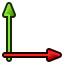
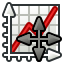

Plot MultiAxes tutorial/es
| Tema |
|---|
| Plot workbench |
| Nivel |
| Intermediate |
| Tiempo para completar |
| Autores |
| Versión de FreeCAD |
| Archivos de ejemplos |
| Ver también |
| None |
Antes de comenzar con el presente tutorial aseguresé de haber completado el tutorial sobre graficado básico. En este tutorial aprenderemos a crear y trabajar con gráficos con múltiples ejes de referencia. Puedes aprender más sobre el Módulo de graficado aquí.

En la imagen anterior tenemos una muestra del aspecto del gráfico que pretendemos trazar. Siguiendo este tutorial usted aprenderá:
- A crear gráficos con múltiples ejes desde la consola de Python.
- A editar los diferentes juegos de ejes..
- A controlar la legenda y la malla cuando existen varios juegos de ejes.
- A reposicionar títulos y legenda.
Plotting data
Graficar
Tal y como hicimos en el anterior tutorial, vamos a emplear la consola de Python, o en su defecto las macros, para graficar los datos, con la diferencia de que en este caso lo haremos con varios juegos de ejes.
Creating plot data
Crear los datos
En este ejemplo trazaremos tres curvas, dos de ellas serán las empleadas en el tutorial anterior, pero añadiremos una más de tipo polinómico. El objetivo es que los rangos de variación de esta función sean diferentes a los de las funciones polinómicas. Para crear todos los vectores de datos necesarios ejecutamos los siguientes comandos:
import math
p = range(0,1001)
x = [2.0*xx/1000.0 for xx in p]
y = [xx**2.0 for xx in x]
t = [tt/1000.0 for tt in p]
s = [math.sin(math.pi*2.0*tt) for tt in t]
c = [math.cos(math.pi*2.0*tt) for tt in t]
Al moverse x entre 0 y 2, y se moverá entre 0 y 4, luego si trataramos de graficar esta función junto con las funciones trigonométricas, que se mueven entre 0 y 1, al menos una de las funciones estará o bien truncada, o bien mal escalada, y por tanto estamos interesados en emplear un segundo juego de ejes. Los gráficos con múltiples ejes en FreeCAD están orientados a la producción de gráficos con diferentes juegos de ejes de referencia, pero no para la creación de documentos con múltiples gráficos.
Drawing functions, adding new axes
Trazar las funciones en varios ejes
En este ejemplo vamos a trazar la curva polinómica en los ejes principales. Si todos los ejes de referencia que usted va a crear tienen el mismo tamaño, no es muy relevante cúal emplea para cada curva, pero en caso de que un juego de ejes sea de menor tamaño (como ocurre en este ejemplo), es muy recomendable dejar los ejes principales (los que se crean por defecto) como los de mayor tamaño, puesto que en ellos se incorpora el fondo blanco. Para graficar la primera curva tan sólo necesitamos recurrir a los siguientes comandos:
try:
from FreeCAD.Plot import Plot
except ImportError:
from freecad.plot import Plot
Plot.plot(t,s,r"$\sin\left( 2 \pi t \right)$")
Plot.plot(t,c,r"$\cos\left( 2 \pi t \right)$")
En este ejemplo optamos por pasar directamente el título de la serie como parámetro, en lugar de editarlo más tarde. Nótese que la cadena de texto pasada como argumento viene precedida de la letra r, lo que le indica a Python que no debe tratar de reinterpretar las sequencias especiales (el símbolo \ es muy frecuente en la notación LaTeX).
Para graficar las series trigonométricas creamos unos nuevos ejes sobre los que llamamos a la función plot. En el módulo de graficado de FreeCAD cuando se crea un nuevo juego de ejes, este se establece como el activo, y por tanto todas las curvas que se trazen se referirán a estos nuevos ejes.
Plot.addNewAxes()
Plot.plot(x,y,r"$x^2$")
Como podrá comprobar el gráfico obtenido es una locura, con ejes que se superponen y curvas del mismo color. Para erreglarlo vamos a recurrir al módulo de graficado de FreeCAD.
Configuring plot
Configuring axes
Configuring axes
El módulo de graficado de FreeCAD dispone de una herramienta para modificar las propiedades de cada eje.

{kind=link}

Lo primero que ustéd encontrará en ésta herramienta es el selector de juego de ejes activo. Ésta herramienta, al igual que la herramienta para establecer títulos, le permite seleccionar el juego de ejes activo sobre el que se graficarán futuras curvas. Por el momento trabajaremos sobre el juego de ejes 1, el último que generamos.
Lo primero que haremos será modificar el tamño de los ejes desplazando los deslizadores horizontal de la izquierda y vertical de abajo (trate de emular la imagen de ejemplo). Ahora podemos cambiar la alineación de los ejes hacia arriba y derecha, estableciendo un desfase de 2 unidades.
Configuring series
Configurar las series
Configure el aspecto de las curvas para que se parezcan a las del ejemplo. Si no recuerda como llevar a cabo este trabajo recurra al anterior tutorial.
Showing grid and legend
Mostrar la malla y la legenda
El proceso para mostrar la malla y la legenda is similar al seguido en el anterior tutorial, con la salvedad de que en este caso, al disponer de varios juegos de ejes, el comportamiento de cada elemento es diferente.
La malla por ejemplo se referirá al juego de ejes activo, así, si muestra la malla en éste instante verá como sólo se muestra para los ejes de las curvas trigonométricas. Para mostrar la otra malla también debe cambiar los ejes activo mediante la herrameitna de edición de ejes o mediante la herramienta de establecimiento de títulos, y entonces volver a activar la malla (puede ocurrir que necesite ejecutar la herramienta dos veces).
Respecto de la legenda, ésta será única, pero dependiendo de en que juego de ejes decida mostrarla, las coordenadas de su posición serán diferentes. Cuando muestre la leyenda observará que está mal emplazada, tapando una parte significativa de la legenda, algo de lo que nos ocuparemos más adelante.
Setting axes labels
Establecer los títulos
Puede establecer los títulos de la misma manera que lo hacía en el anterior tutorial. En este caso observará que el número de elementos es mayor, y que puede establecer un título por cada juego de ejes. En el módulo de graficado de FreeCAD se permite establecer un título por cada juego de ejes, aunque en este caso estamos interesados en un único título, por tanto establezca las siguietnes etiquetas:
Axes 0:
- Title = Multiaxes example
- X Label = $x$
- Y Label = $\mathrm{f} \left( x \right)$
Axes 1:
- X Label = $t$
- Y Label = $\mathrm{f} \left( t \right)$
Establezca también el tamaño de fuente a 20 a todos ellos salvo al título, al que le daremos una fuente de 24 puntos. Al igual que ocurría con la legenda, el título está mal situado, intersecándose con los ejes de las curvas trigonométricas. Vamos a ocuparnos de ambos problemas.
Setting elements position
Reposicionar elementos del gráfico
El módulo de graficado de FreeCAD dispone también de una herramienta para reposicionar algunos elementos del gráfico como son títulos y legenda.

{kind=link}

La herramienta le muestra un listado de todos los elementos disponibles para ser reposicionados. Los títulos de juego de ejes, al igual que la leyenda, pueden ser movidos en ambas direcciones, mientras que los títulos de eje sólo se podrán mover en la dirección del mismo. Selecciones el título del juego de ejes 0 y desplázelo hasta el punto (0.24,1.01). Reposicione también la legenda en algún punto menos conflictivo, pudiendo también incrementar el tamaño de fuente de sus etiquetas.
Guardar gráfico
En este momento puede usted guardar su trabajo. Acúda al anterior tutorial si no recuerda como hacerlo.
Now you can save your work. See the previous tutorial if you don't remember how to do it.
- Getting started
- Installation: Download, Windows, Linux, Mac, Additional components, Docker, AppImage, Ubuntu Snap
- Basics: About FreeCAD, Interface, Mouse navigation, Selection methods, Object name, Preferences, Workbenches, Document structure, Properties, Help FreeCAD, Donate
- Help: Tutorials, Video tutorials
- Workbenches: Std Base, Assembly, BIM, CAM, Draft, FEM, Inspection, Material, Mesh, OpenSCAD, Part, PartDesign, Points, Reverse Engineering, Robot, Sketcher, Spreadsheet, Surface, TechDraw, Test Framework
- Hubs: User hub, Power users hub, Developer hub